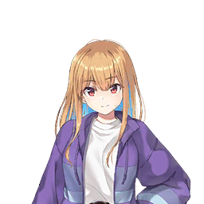

| 角色 | 对话与旁白 |
|---|---|
| 旁白 | 某天和梓舞处理事务所工作时。 |
|  海里梓舞 | 制作人。 宣传用的舞蹈视频编辑完了。能帮忙确认下吗？ |
| 制作人 | 好快啊，这就完成了？ 明明说明天也可以的。 |
| 旁白 | 我拜托梓舞将存档的演出视频剪辑成精彩集锦。 打开共享云盘确认视频。 |
| 制作人 | 花了不少时间吧？ |
海里梓舞 | 还好。 因为我把所有现场演出影像都过了一遍。 不过剪辑就偷工减料了些。 |
| 旁白 | 虽这么说视频却剪得很棒。 应该无需修改或指正了。 |
| 制作人 | 嗯，相当不错！ 谢啦。那么关于下个视频—— |
海里梓舞 | 啊，那个能明天再说吗？ |
| 制作人 | 诶？当然可以... |
海里梓舞 | 抱歉，有点事要办。 |
| 旁白 | 冷淡地说完， 梓舞迅速拿起包走向出口。 |
海里梓舞 | 那我先走了。 |
| 旁白 | 梓舞低头致意后头也不回地离开了事务所。 |
| 制作人 | （冷淡虽然是常态... 但今天特别匆忙啊） |
| 制作人 | （说起来最近这个时间离开事务所的次数变多了...） |
| 旁白 | 回想起来，上次和上上次似乎也是这个时间离开的。 无意间瞥向梓舞刚坐过的桌子，发现她忘了手机。 |
| 制作人 | （是忘带了吗。可能还在事务所附近...） |
| 旁白 | 我抓起手机小跑着冲向事务所外。 |
| 制作人 | （...不在啊。果然没追上吗） |
| 旁白 | 在事务所周围转了一圈也没找到梓舞。 |
| 制作人 | （放事务所的话，她发现会来取吧） |
| 旁白 | 正欲返回时，远处隐约传来耳熟的声音。 |
| 温柔的声音 | 一、二、一、二。 到这里转圈。 |
| 制作人 | （这声音...是梓舞？ 在公园那边吗...） |
| 旁白 | 梓舞唰地转身，周围孩子们瞬间沸腾， 小手拼命鼓掌。 |
海里梓舞 | 那么，接下来轮到大家了。 试着模仿我的动作跳跳看。？ |
| 旁白 | 看起来是在教他们跳舞。 看着孩子们笨拙跳舞的样子， 梓舞露出温柔笑容。 |
| 制作人 | （要办的事原来是这个...） |
| 男孩 | 呐——姐姐， 刚才那个转圈怎么跳啊——？ |
海里梓舞 | 嗯，转圈啊。 想转得漂亮，脚的位置很重要哦。 像这样交叉试试看。 |
| 男孩 | 这样？ |
海里梓舞 | 对对。 保持这样往这边转。 |
| 男孩 | 啊！成功啦！ 转起来啦——！ |
海里梓舞 | 哦——很厉害嘛。 记住刚才的感觉哦。 |
| 女孩 | 姐姐——再教我更多嘛！ 我想学会好多好多舞蹈！ |
海里梓舞 | 想学会好多好多啊。 喜欢跳舞吗？ |
| 女孩 | 嗯！超喜欢——！ |
海里梓舞 | 哈哈哈，这样啊。 那为了让你能跳得更好，我来教你吧。 |
海里梓舞 | 不过光靠教是进步不了的。 要想学会很多舞蹈，你觉得该怎么做呢？ |
| 女孩 | 呃...唔——嗯... |
| 男孩 | 是什么呀...？呃，呃... |
| 旁白 | 梓舞凝视着苦思冥想的孩子们， 即使他们不懂也绝不直接告知答案。 |
| 旁白 | 思考片刻后男孩似乎恍然大悟， 表情豁然开朗。 |
| 男孩 | 知道啦！ 要多多练习！ |
海里梓舞 | 嗯，答得很好。 很棒哦。我只是负责教，变厉害要靠你自己哦。 |
海里梓舞 | 刚才教过之后，不是成功转起来了吗？ 那个不练习的话马上就不会了哦。 |
海里梓舞 | 但只要坚持练习，就会越来越厉害的。 |
| 男孩 | 嗯！知道啦！ |
| 女孩 | 我也要——！ 我会多多练习的，姐姐再教更多嘛——！ |
海里梓舞 | 好啊，认真练习的话， 下次教你们更难的动作。 |
| 制作人 | （嘿...挺会照顾人的嘛。而且梓舞看起来也很开心） |
| 旁白 | 我在附近长椅坐下，望着开心上舞蹈课的梓舞和孩子们。 看来她和孩子们都乐在其中，教学持续了好一会儿。 |
海里梓舞 | 好——今天就到这里。 今天教的动作要好好练习哦。 |
海里梓舞 | 认真练熟的话， 下次教你们新的舞蹈。 |
| 女孩 | 真的——！？约好了哦——！ |
| 男孩 | 绝对哦！说定啦！ |
海里梓舞 | 当然。 所以今天就到这里啦。路上小心！ |
| 男孩 | 知道啦——！ |
| 女孩 | 姐姐拜拜——！下次见——！ |
| 旁白 | 孩子们挥舞着小手啪嗒啪嗒跑出公园。 她目送他们背影转身时，嘴角仍挂着柔和笑意。 那一瞬与我守护在后方的视线相交，她惊讶地睁大眼睛。 |
海里梓舞 | ...咦？制作人？ 您怎么在这里... |
| 制作人 | 梓舞，你把手机忘事务所了吧？ 我本来想给你送过来...但看你正忙。 |
海里梓舞 | ...啊，没注意到。 谢谢您。 |
| 旁白 | 梓舞接过手机，带着尴尬表情看过来。 |
海里梓舞 | 难道...您一直在看？ |
| 制作人 | 不算一直吧。 大概一小时？看你挺开心的，有点惊讶。 |
海里梓舞 | 是指我和孩子们玩吗...？ |
| 制作人 | 嘛这也算一方面， 主要是教法很厉害啊。 你让孩子自己思考怎么进步对吧？ |
| 制作人 | 通过这种引导，他们应该会主动练习的。 |
| 制作人 | 而且练好就教新动作，还准备了奖励。 孩子们也更有干劲。 |
海里梓舞 | 唔，以前常照顾弟弟而已。 |
海里梓舞 | 教法...倒没刻意研究， 可能因为我也被这么教过吧。 |
| 旁白 | 仿佛回忆着什么，梓舞望向天空。 那神情像在追忆往事，嘴角泛着柔和笑意。 |
海里梓舞 | 话说制作人，看到的话请打招呼啊。 偷窥会让人不太舒服。 |
| 制作人 | 不、不是偷窥啦！ 只是看你们开心，觉得打扰不太好... |
海里梓舞 | ...又不是因为开心才做的。 |
| 制作人 | 是吗？ 但梓舞那种笑容很少见哦。 |
海里梓舞 | 我才没笑。制作人看错了吧。 |
| 制作人 | 不用隐瞒啦... 喜欢孩子吗？教跳舞这爱好挺不错的。 |
海里梓舞 | 不是爱好。 我也不太喜欢孩子。 又任性又吵。 |
| 旁白 | 梓舞始终避开我的目光。 侧脸看起来既像害羞...又像藏着其他情绪。 |
海里梓舞 | 干嘛一直盯着我？ 想说我很奇怪吗？ |
| 制作人 | 不是。 只是……在想为什么要做那样的事。 |
海里梓舞 | 唔，我也觉得不符合自己风格啦。 |
海里梓舞 | 但这是我...报恩的方式吧。 |
| 旁白 | 梓舞抬起视线。 她望着远方某处，似乎在斟酌措辞。 |
海里梓舞 | 我过去...也是这么学会跳舞的。 |
海里梓舞 | 不想回家时， 深夜总有大哥哥大姐姐陪我玩... 就这样开始跳舞了。 |
海里梓舞 | 所以嘛，只是做同样的事罢了。 |
| 旁白 | 语气虽然冷淡，但她眼角微垂， 神情是难以言喻的温柔。 |
| 制作人 | 那些孩子说不定会成为未来的梓舞呢。 等他们长大了，我得去招募才行。 |
海里梓舞 | 唔，随你便啦。 他们怎么和舞蹈结缘是他们的自由。 |
海里梓舞 | 对我来说... 只要他们能一直喜欢跳舞，那就足够了。 |